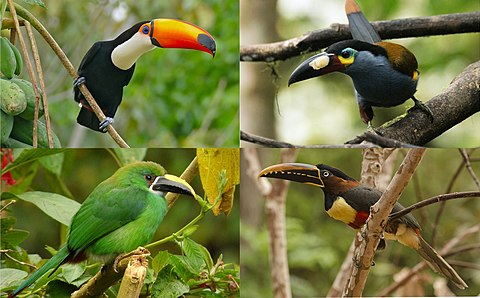
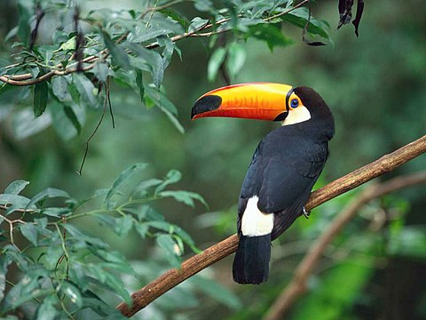
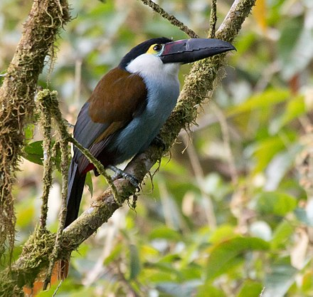

Toucan

Toucans (/ˈtuːkæn/, UK: /-kən/) are members of the Neotropical near passerine bird family Ramphastidae. The Ramphastidae are most closely related to the American barbets. They are brightly marked and have large, often colorful bills. The family includes five genera and over forty different species.
Toucans are arboreal and typically lay 2–21 white eggs in their nests. They make their nests in tree hollows and holes excavated by other animals such as woodpeckers—the toucan bill has very limited use as an excavation tool. When the eggs hatch, the young emerge completely naked, without any down. Toucans are resident breeders and do not migrate. Toucans are usually found in pairs or small flocks. They sometimes fence with their bills and wrestle, which scientists hypothesize they do to establish dominance hierarchies. In Africa and Asia, hornbills occupy the toucans' ecological niche, an example of convergent evolution.
Table of Contents
- Description
- Habitat
- Behavior
- References
- See Also...
Description

Toucans range in size from the lettered aracari (Pteroglossus inscriptus), at 130 g (4.6 oz) and 29 cm (11 in), to the toco toucan (Ramphastos toco), at 680 g (1.50 lb) and 63 cm (25 in). Their bodies are short (of comparable size to a crow's) and compact. The tail is rounded and varies in length, from half the length to the whole length of the body. The neck is short and thick. The wings are small, as they are forest-dwelling birds who only need to travel short distances, and are often of about the same span as the bill-tip-to-tail-tip measurements of the bird.
The toco toucan is the largest species of toucan.
The legs of the toucan are strong and rather short. Their toes are arranged in pairs with the first and fourth toes turned backward. The majority of toucans do not show any sexual dimorphism in their coloration, the genus Selenidera being the most notable exception to this rule (hence their common name, "dichromatic toucanets"). However, the bills of female toucans are usually shorter, deeper and sometimes straighter, giving more of a "blocky" impression compared to male bills. The feathers in the genus containing the largest toucans are generally purple, with touches of white, yellow, and scarlet, and black. The underparts of the araçaris (smaller toucans) are yellow, crossed by one or more black or red bands. The toucanets have mostly green plumage with blue markings.
Spot-billed toucanets have smaller bills than Ramphastos toucans.
The colorful and large bill, which in some large species measures more than half the length of the body, is the hallmark of toucans. Despite its size, the toucan's bill is very light, being composed of bone struts filled with spongy tissue of keratin[4] between them. The bill has forward-facing serrations resembling teeth, which historically led naturalists to believe that toucans captured fish and were primarily carnivorous; today it is known that they eat mostly fruit. Researchers have discovered that the large bill of the toucan is a highly efficient thermoregulation system, though its size may still be advantageous in other ways.[5][6] It does aid in their feeding behavior (as they sit in one spot and reach for all fruit in range, thereby reducing energy expenditure), and it has also been theorized that the bill may intimidate smaller birds, so that the toucan may plunder nests undisturbed (see Diet below). The beak allows the bird to reach deep into tree-holes to access food unavailable to other birds, and also to ransack suspended nests built by smaller birds.
A toucan's tongue is long (up to 15 cm (5.9 in)), narrow, grey, and singularly frayed on each side, adding to its sensitivity as a tasting organ.
A structural complex probably unique to toucans involves the modification of several tail vertebrae. The rear three vertebrae are fused and attached to the spine by a ball and socket joint. Because of this, toucans may snap their tail forward until it touches the head.[7] This is the posture in which they sleep, often appearing simply as a ball of feathers, with the tip of the tail sticking out over the head.
Habitat

Toucans are native to the Neotropics, from Southern Mexico, through Central America, into South America south to northern Argentina. They mostly live in the lowland tropics, but the mountain species from the genus Andigena reach temperate climates at high altitudes in the Andes and can be found up to the tree line.[8]
For the most part the toucans are forest species, and restricted to primary forests. They will enter secondary forests to forage, but are limited to forests with large old trees that have holes large enough to breed in. Toucans are poor dispersers, particularly across water, and have not reached the West Indies. The only non-forest living toucan is the toco toucan, which is found in savannah with forest patches and open woodlands.[8]
Behavior
Toucans are highly social and most species occur in groups of up to 20 or more birds for most of the time. Pairs may retire from the groups during the breeding season, then return with their offspring after the breeding season. Larger groups may form during irruptions, migration or around a particularly large fruiting tree.[8]
Toucans often spend time sparring with their bills, tag-chasing and calling, during the long time it takes for fruit to digest. These behaviours may be related to maintenance of the pair bond or establishing dominance hierarchies, but the digestion time of fruit, which can take up to 75 minutes during which the toucan can't feed,[9] provide this social time.[8]
References
- Ferrara, Sue. "The Difference Between A Toucan & A Hornbill". animals.mom.me. Pets on Mom. Retrieved 8 July 2020.
- "Vocabulário Tupi-Português do Curso Elementar de Tupi Antigo" [Elementary Course for Tupi-Portuguese Vocabulary of the Old Tupi] (in Portuguese). Universidade de São Paulo. Retrieved 1 June 2015 – via fflch.usp.br.
- "Jacamars, puffbirds, toucans, barbets & honeyguides". IOC World Bird List (10.2 ed.). Retrieved 2017-03-10 – via worldbirdnames.org.
- "Biomimetics". Pulse. Jacobs School of Engineering, University of California San Diego. Spring 2005. Archived from the original on July 20, 2011. Retrieved November 6, 2020.
- Tattersall, G. J.; Andrade, D. V.; Abe, A. S. (2009). "Heat Exchange from the Toucan Bill Reveals a Controllable Vascular Thermal Radiator". Science. 325 (5939): 468–70. Bibcode:2009Sci...325..468T.
- "Hot secret behind toucan's bill". BBC News. 23 July 2009.
- Reynolds, J. (2003). "Handbook of the Birds of the World, Vol. 7. Jacamars to Woodpeckers". Biological Conservation. 111 (2): 280–281. doi:10.1016/S0006-3207(02)00275-6.
- Short, L.L. & Horne, J.F.M. (2017). Toucans (Ramphastidae). In: del Hoyo, J., Elliott, A., Sargatal, J., Christie, D.A. & de Juana, E. (eds.). Handbook of the Birds of the World Alive. Lynx Edicions, Barcelona. (retrieved from http://www.hbw.com/node/52284 on 25 March 2017).
- Wheelwright, Nathaniel T. (1 January 1991). "How Long do Fruit-Eating Birds Stay in the Plants Where They Feed?" (PDF). Biotropica. 23 (1): 29–40. doi:10.2307/2388685. JSTOR 2388685.